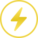

Loading mark
The lightning bolt is the *only* element that animates ambiently.
@keyframes boltzing
— scale 1 → 1.1 → 1, 3s, infinite. Use on any loading state.

circle marks · solid · transparent-yellow · transparent-black · Pro